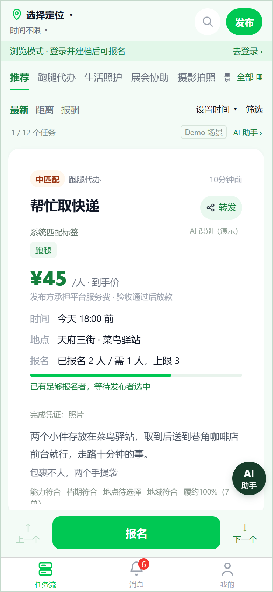
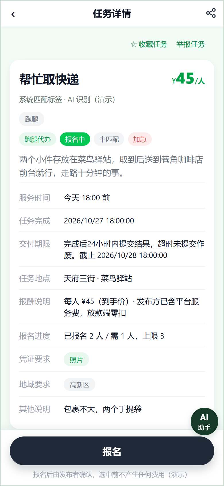

01 要解决的事
接到任务之后，双方仍需要明确的约定
发布者要说清工作内容、时间、地点、人数和报酬；接单者要判断自己的能力与档期是否合适。选人之后，还有交付凭证、验收、补证、取消和争议需要处理。我把这些后续操作放进同一份任务规则中，避免页面能报名，却说不清任务如何结束。
02 我具体承担的工作
产品规则需要由我自己实现和验证
- 梳理发布者、接单者和运营人员的操作边界，定义任务状态与人员订单关系。
- 开发用户端交互 Demo，覆盖任务浏览、发布、报名、档期、交付、消息与个人档案。
- 开发运营后台 Demo，展示任务查询、审核、争议、资金记录及规则配置。
- 继续开发正式用户端、管理前端和后端接口，将已确认交互接入真实业务数据。
- 核对 Demo 与正式版本的功能差异，跟进接口适配、异常处理及回归验证。
用户端采用 UniApp，管理端采用 Vue 3，后端采用 Java、若依与 MySQL。Demo 保留独立的演示数据，正式开发版本单独接入接口和数据库。
03 开发时重点处理的规则
任务状态、人员进度和资金结果分别确认
报名数量与选中人数分开记录。发布者选人之后，再进入对应人员的执行与交付，避免把报名成功误解为已经接单。
凭证提交后仍有验收、补证和争议处理。后台按人员订单查看记录，支持多人任务中不同人的进度差异。
业务验收与渠道资金结果分开处理。正式版本的报酬结算、提现及奖励发放尚需继续开发和验证，不能以 Demo 中的成功状态代替真实到账。
04 真实界面证据
用户判断任务，运营查看处理依据
以下截图来自本地运行的交互 Demo，展示已实现的页面与规则表达。账号、金额、任务和 AI 识别结果均为模拟样例，不代表真实交易、用户规模或正式版本全部完成。

用户在报名前判断任务是否适合自己。
我的设计重点把时间、地点、报酬和匹配条件放在同一张任务卡中。

报名之前了解工作内容及完成凭证。
我的设计重点让任务约定与报名入口保持在同一个操作上下文。
运营人员需要查询任务进度及相关记录。
我的设计重点分别展示任务状态、报名与选中人数，并关联凭证、流水和人员订单。
05 当前进展
已有可运行的 Demo，正式版本持续联调
用户端和后台均可在本地运行，使用模拟数据验证任务流程与操作规则。
已开展用户端、管理端和后端开发，用户、任务、人工审核、争议及相关查询已有接口实现，继续补齐并核对实际功能。
公网部署、微信真实支付与回调、报酬结算及提现发放等仍有待办；尚未完成全系统上线验收。
目前不提供公开体验地址。本页先展示项目思路、个人工作与真实 Demo 截图，公开版本准备好后再补充访问入口。
06 这次实践对我的要求
页面上的每个状态，都要有实现依据
这个项目由我继续承担实际开发，因此产品方案中的权限、异常和完成条件都需要落到代码与接口上。我重点检查的是：用户现在能做什么、后台依据什么处理，以及操作失败之后如何继续。Demo 与正式版的差异也要逐项保留，不能只凭页面相似就认定功能完成。